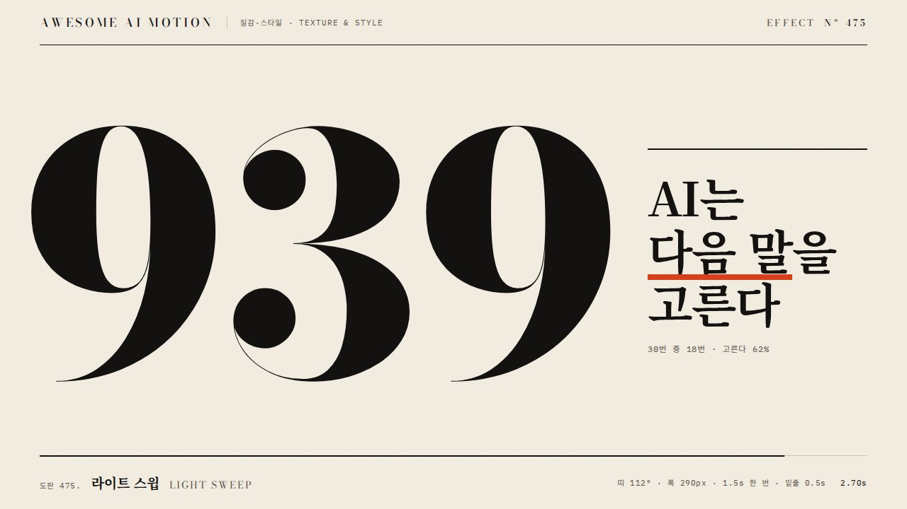
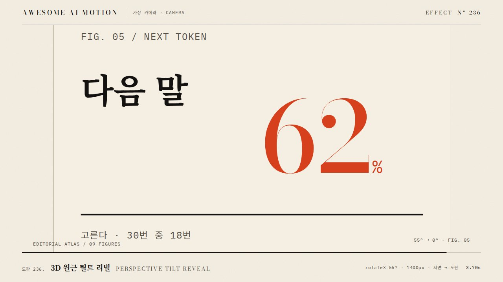

표면 각도에 따라 색상이 무지개처럼 변하며 광택이 미끄러지는 홀로그램 카드 효과A rainbow sheen slides across a card as the surface angle changes, like a hologram.
카드가 3초 동안 천천히 기울어지며 표면의 무지개 광택이 왼쪽에서 오른쪽으로 한 번 지나간다
채도를 높여 형광색 무지개가 카드 전체를 덮거나, 광택이 빠르게 깜빡여 글자 읽기를 방해한다
기본값은 클립에 쓴 값Defaults are the values used in the clip
| 항목PARAM | 기본DEFAULT | 범위RANGE | 메모NOTE |
|---|---|---|---|
| 주기 | 3000ms | 2000~5000ms | 광택 한 번 통과 |
| hue 속도 | 0.15 | 0.08~0.3 | 초당 회전 비율 |
| Fresnel 강도 | 0.4 | 0.25~0.6 | 가장자리에서 세짐 |
| 광택 각도 | 25도 | 15~45도 | 대각선 밴드 |
| 기울임 | rotateY ±10도 | 6~14도 | 카드 자체 기울임 |
// fragment: h=fract(uv.x*1.2+uv.y*.6+uTime*.15)
vec3 rainbow=.5+.5*cos(6.283*(h+vec3(0,.33,.67)));
float band=smoothstep(.15,0.,abs(fract(dot(uv,vec2(.9,.4))-uProg)-.5)-.35);
float fres=pow(1.-dot(n,vec3(0,0,1)),3.);
col=mix(base,rainbow,(band*.5+fres*.4));그대로 붙여 넣는다Paste as is
<카드>에 홀로그램 광택을 넣어줘. WebGL 또는 CSS conic-gradient로 무지개 hue 밴드를 만들고, 3초 동안 대각선 25도 밴드가 왼쪽에서 오른쪽으로 한 번 지나가게 해. hue 회전 속도 0.15, Fresnel 강도 0.4, 카드는 rotateY -10도에서 10도로 sine.inOut 기울임. 글자 영역의 광택 밝기는 0.3 이하로 제한하고 paused 타임라인으로 구동해.
Add a holographic sheen to <card>. Build a rainbow hue band with WebGL or a CSS conic-gradient and sweep a 25-degree diagonal band from left to right once over 3s. Hue speed 0.15, Fresnel strength 0.4, and tilt the card rotateY from -10 to 10 degrees with sine.inOut. Keep sheen brightness over text at 0.3 or lower and drive it from a paused timeline.
<파일>의 <카드>에 holographic-sheen을 구현해. 주기 3000ms, hue 속도 0.15, Fresnel 0.4, 밴드 각도 25도, rotateY ±10도. 0초, 1.5초, 3초를 캡처해 밴드가 이동하는지, 텍스트 영역 밝기가 과하지 않은지, 3초 뒤 카드가 원래 색으로 돌아오는지 확인해.
Implement holographic-sheen on <card> in <file>: period 3000ms, hue speed 0.15, Fresnel 0.4, band angle 25 degrees, rotateY +/-10. Capture at 0s, 1.5s, and 3s to verify the band travels, text-area brightness stays moderate, and the card returns to its base color after 3s.
HyperFrames · ReelForge · Scrolline


개념 출처와 라이선스. 구현은 이 레포에서 새로 씀Concept sources and licenses. Implementations are original to this repo
claude-skill:hyperframes-animation/adapters/html-in-canvas-patterns.md)unknown